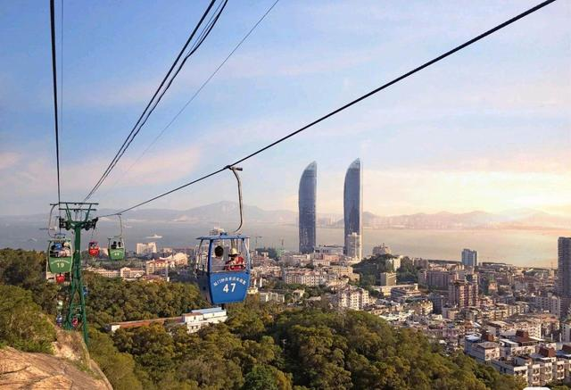

钟鼓索道
|  |
景点介绍钟鼓索道位于国家4A风景名胜区--厦门园林植物园的西侧，全长1000多米，离地面的距离高达150多米，横跨万石植物园、虎溪岩、鸿山公园直至南普陀五老峰，乘坐缆车中,看白云悠悠，清风阵阵，缆车景区内树木葱葱，高低错落，山上怪石磷峋，景色别有洞天,是厦门岛内难得的天然氧吧,还可俯瞰厦门城市建筑群、金门列岛等等景色。 缆车悠悠在空中运行，腾着云架着雾，飞过山，越过森林乘兆;车在空中行，人在云中唱;葛戏她山高兰喇恋试路险，在吊椅上征服寒夜档;多少风光摄在晃悠照陵臭闲情中，您便把陆上已经游览的美景再次以不同的角度重新回味。试想，谁还会留下"不识庐山真面目，只缘身在此山中"的遗憾呢? |